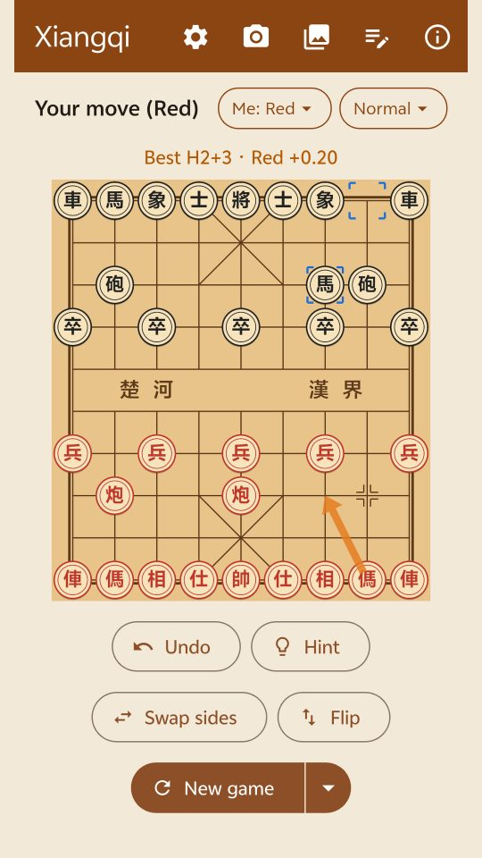
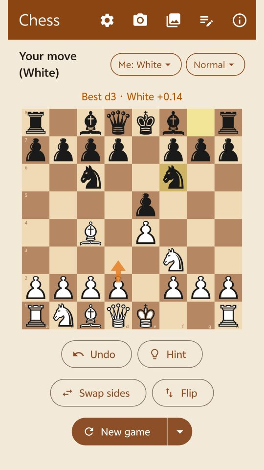
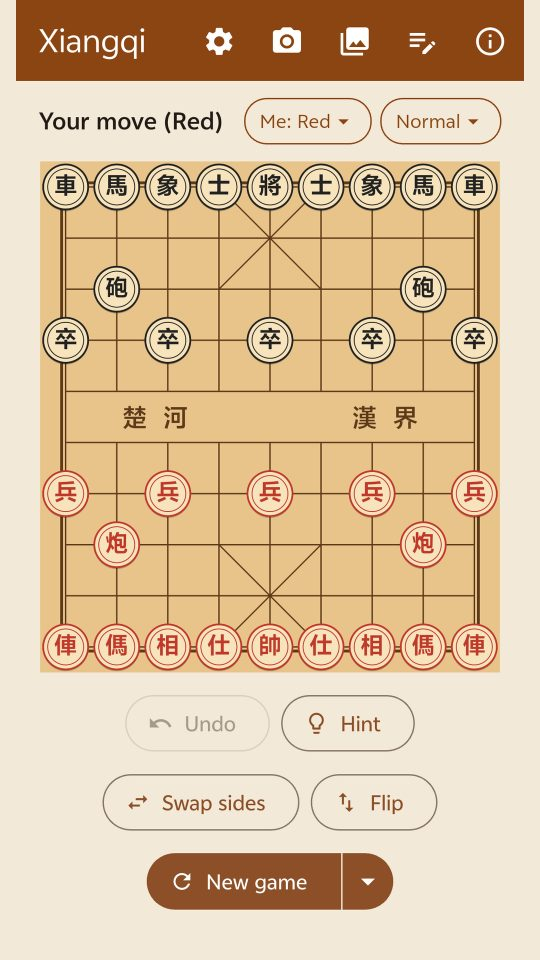
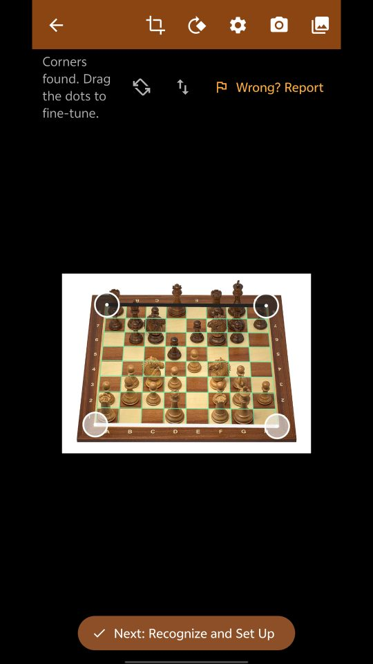

Chinese chess (Xiangqi) and chess in one app. Snap a photo of any board to set up the position, get the best move from a strong engine, or play against the computer. 中国象棋和国际象棋装在一个应用里。对着棋盘拍一张照片就能摆好局面，用强力引擎找出最佳着法，也可以和电脑对弈。


Two games, one app. Switch between Xiangqi and chess at any time. 两种棋，一个应用，随时切换中国象棋和国际象棋。
Photograph a real board, a book diagram or a screen. The app finds the four corners and recognizes every piece.拍实体棋盘、棋书上的棋图或屏幕都行。App 自动找到棋盘四角，认出每一个棋子。
Pikafish for Xiangqi and Stockfish for chess show the best move and who is ahead.象棋用皮卡鱼（Pikafish），国际象棋用 Stockfish，给出最佳着法和局面评分。
Easy, Normal or Hard. Take either side, or play a friend on the same phone.简单、普通、困难三档，执哪一方都可以；也能两人在同一台手机上对下。
Place pieces by hand to study an endgame or a puzzle. Copy and paste positions as FEN.手动摆出残局或棋题来研究，支持复制、粘贴 FEN。
The engines and the on-device recognizer run on your phone, so you can play and analyze without a network.引擎和本地识别都在手机上运行，没有网络也能下棋、分析。
If a photo is misread, report it in one tap. Valid reports earn points; every 5 points gives one ad-free day.照片认错了，一键上报。有效上报得积分，每 5 分换 1 天免广告。
Chess King is in early access on Google Play. It's free — join the testers' group, then install it from Google Play like any other app. Feedback and suggestions are very welcome! 棋王目前是 Google Play 上的尝鲜版，免费。先加入测试群组，再像普通应用一样从 Google Play 安装。欢迎试用，多提建议！
Sign in with the same Google account you use for Google Play on your phone, open the group and click Join group. 请用手机上 Google Play 登录的同一个 Google 账号打开群组，点 加入群组 / Join group。
groups.google.com/g/chess-king-testersWith the same account, open the test page and tap Become a tester. 还是用这个账号，打开测试页面，点 成为测试者 / Become a tester。
Open the test page打开测试页面On the same page tap download it on Google Play, or search Google Play for Chess King: Xiangqi & Chess on your phone, then tap Install. 在同一页点 download it on Google Play，或者在手机的 Google Play 里搜 Chess King: Xiangqi & Chess，点 安装 / Install。
Chess King on Google Play在 Google Play 打开Updates arrive through Google Play automatically. To send feedback, use Send private feedback on the app's Google Play page, open an issue at GitHub, or email jerron@gmail.com. 以后的更新会通过 Google Play 自动推送。有建议可以在应用的 Google Play 页面里点 向开发者发送私密反馈，在 GitHub 提 issue，或者发邮件到 jerron@gmail.com。
The buttons along the top: ⚙️ settings, 📷 take a photo, 🖼️ pick a photo from the gallery, ✍️ set up a position, ⓘ about and leaderboard. 顶部一排按钮依次是：⚙️ 设置、📷 拍照、🖼️ 从相册选图、✍️ 摆棋、ⓘ 关于和积分榜。


No, not unless you choose to. Recognition runs on your phone. A photo leaves your phone only when you report a mistake (reports are public on GitHub) or if you turn on optional anonymous sharing in About.默认不会。识别在手机上完成。只有你主动上报识别错误（上报会公开在 GitHub 上），或者在“关于”里打开了匿名分享，照片才会离开手机。
Reporting asks you to sign in with GitHub once. Each valid report earns points on the public leaderboard, and every 5 points is turned into one ad-free day automatically.第一次上报时需要用 GitHub 账号登录。每次有效上报都会在公开积分榜上得分，每 5 分自动换 1 天免广告。
Shoot from above in even light, with the whole board in the frame and no strong glare. You can always fix pieces by hand in the set-up screen — and reporting the photo helps improve recognition.尽量从正上方、光线均匀的地方拍，整个棋盘都在画面里，避免强反光。摆棋页面里都可以手动改，上报照片也能帮助改进识别。
Yes, a small number of ads from Google AdMob. Points from reports give ad-free days.有少量 Google AdMob 广告。上报得到的积分可以换免广告天数。
Not yet — Android only for now.暂时没有，目前只有安卓版。